En este paso crearemos una nueva aplicación Mule en Anypoint Studio a partir de la definición RAML de la API de Omni Channel. Esta será la implementación de nuestra API REST.
- Inicie Anypoint Studio desde el icono del escritorio.
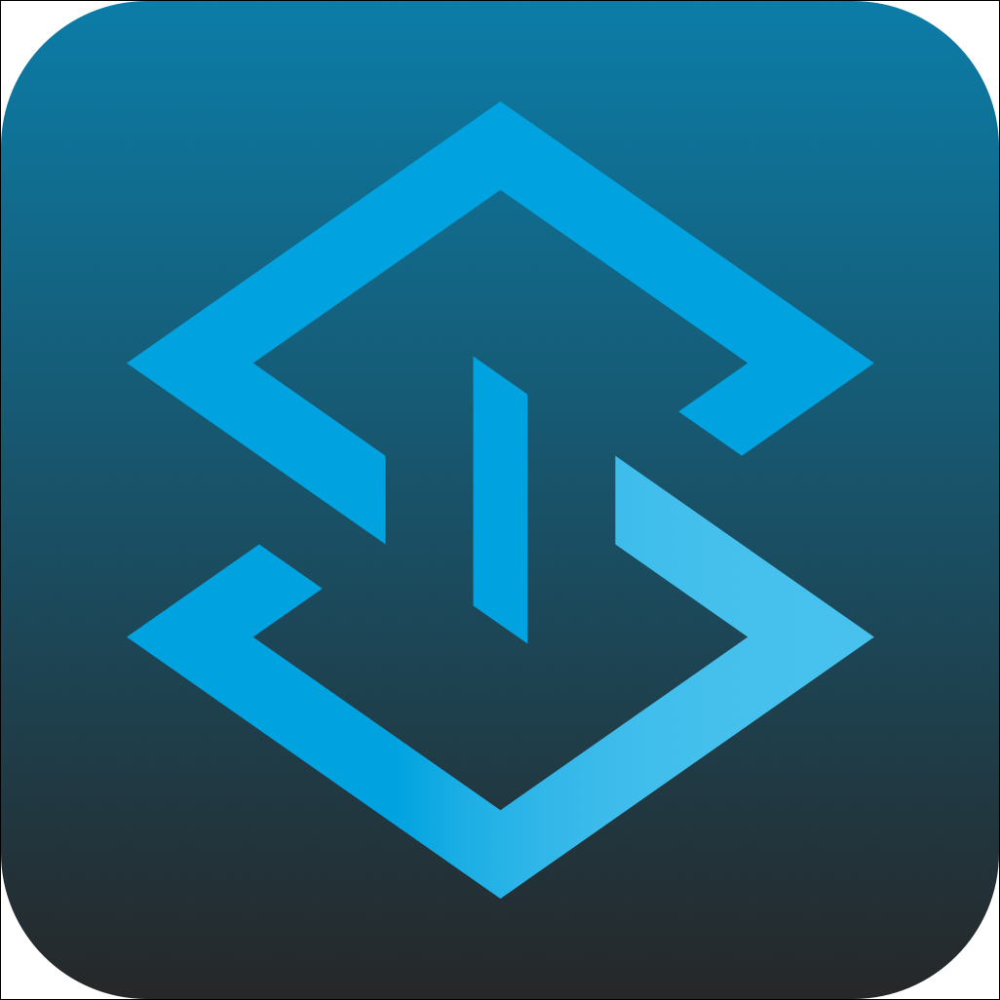 - Cuando abra Studio por primera vez, se le pedirá el espacio de trabajo donde se guardarán los proyectos. Seleccione el que viene por defecto.

- Se le presenta la pantalla de bienvenida de Anypoint Studio 7.
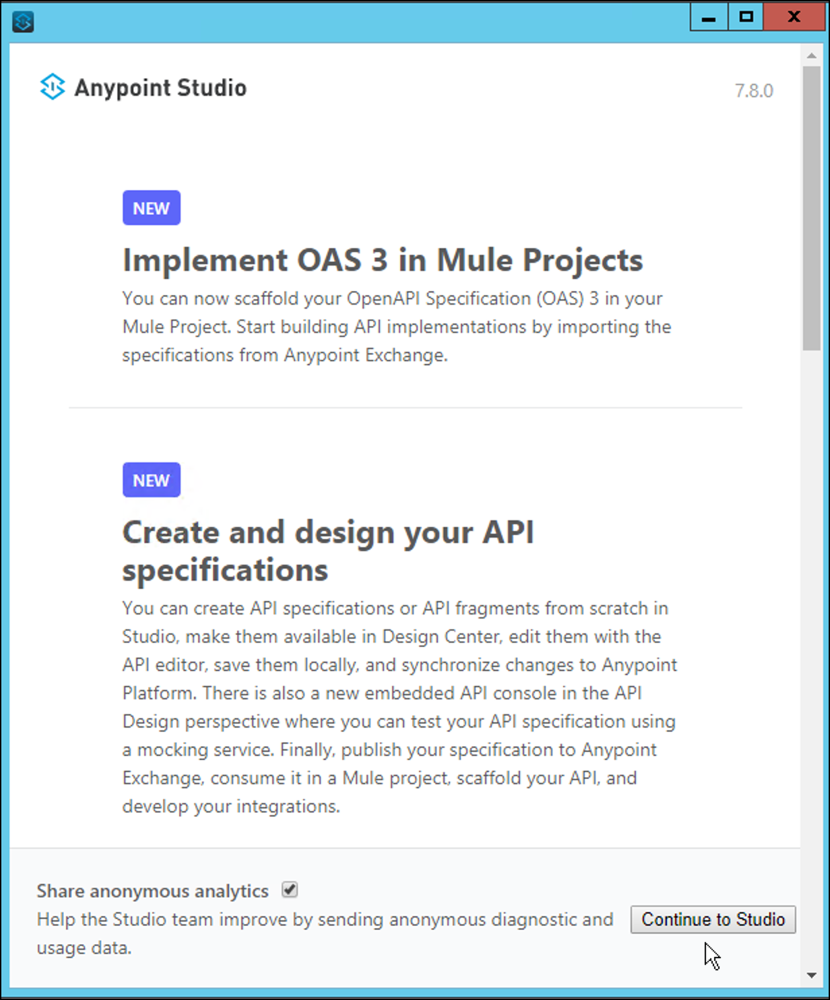 - Desplácese hasta la parte inferior si desea obtener más información sobre Studio. Después de eso, presione Continue to Studio.
- En Workspace Launcher, utilice la ubicación del directorio del espacio de trabajo predeterminado.
- En el menú de Anypoint Studio, seleccione File> New> Mule Project para crear un proyecto nuevo. Aparecerá una ventana para definir los detalles de esta nueva aplicación.
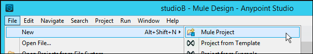 - Asigne al proyecto el nombre
omni-channel-api-v1 - Seleccione el Mule Server 4.3.0 EE.
- En Import a published API , vamos a importar la especificación RAML de Exchange. Haga clic en
 y seleccione from Exchange
y seleccione from Exchange
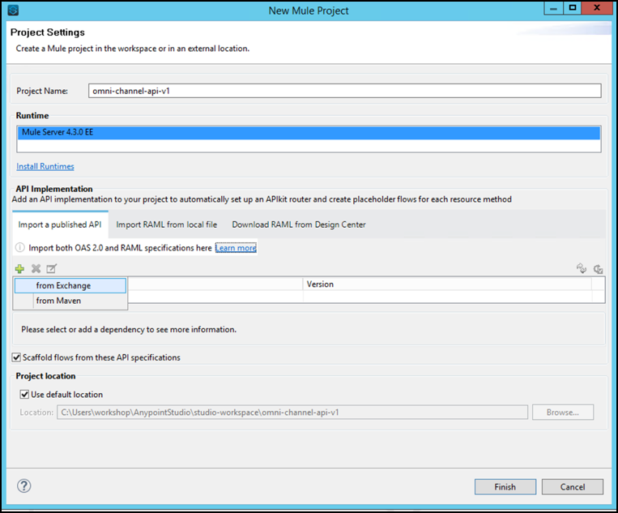 - . Verá una lista con todas las API. Seleccione Customer API y presione Add.
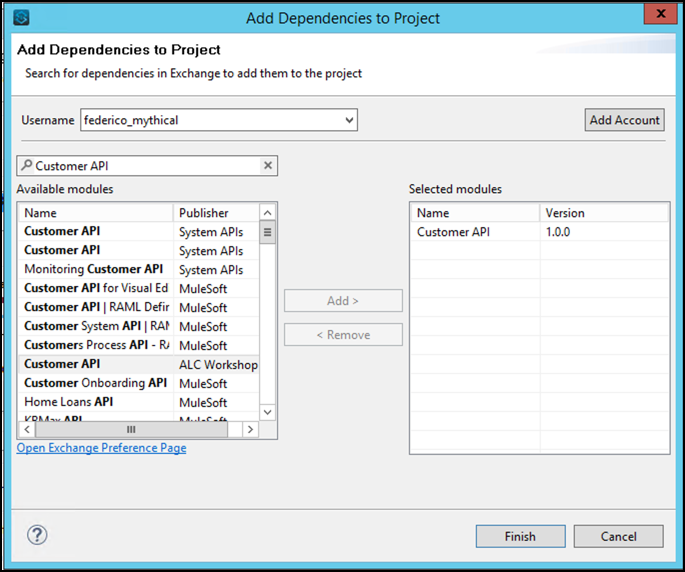 - Presione Finish.
- Comprueba que todo esté bien. Asegúrese de que el Scaffold flows from these API specifications esté marcado. Presione Finish.
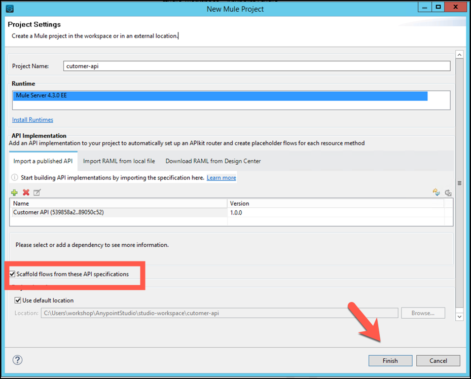 - APIkit crea su nuevo proyecto de Anypoint Studio con una implementación generada según la especificación de su API. La configuración generada implementa el HTTP Listener entrante, así como todos los recursos, metadatos del tipo de datos de solicitud / respuesta, entre otras cosas.
- Para probar la API, ejecutémosla dentro de Studio. Haga clic con el botón derecho en la aplicación en Package Explorer.
- Seleccione Run As> Mule Application 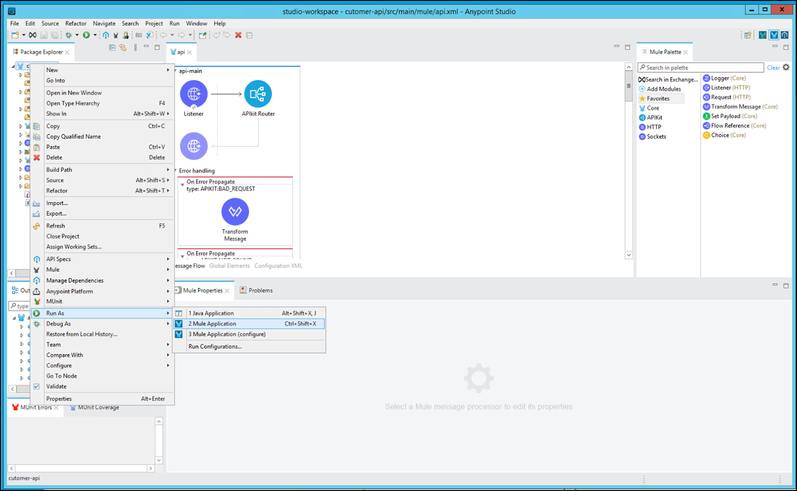
- Cada vez que iniciamos la aplicación, debemos asegurarnos de que se inicie correctamente. Compruebe en la pestaña Console que el proyecto aparece como "DEPLOYED".
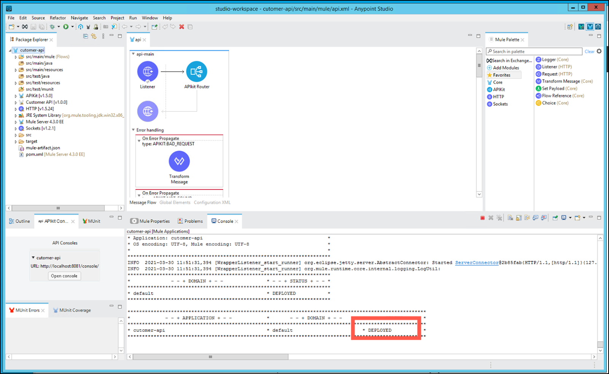 - Una vez implementada la aplicación, Anypoint Studio abrirá una pestaña con las Consolas APIkit donde podemos probar la aplicación (para acceder a la consola, simplemente haga clic en el enlace para abrir la del Customer API Console en un navegador).
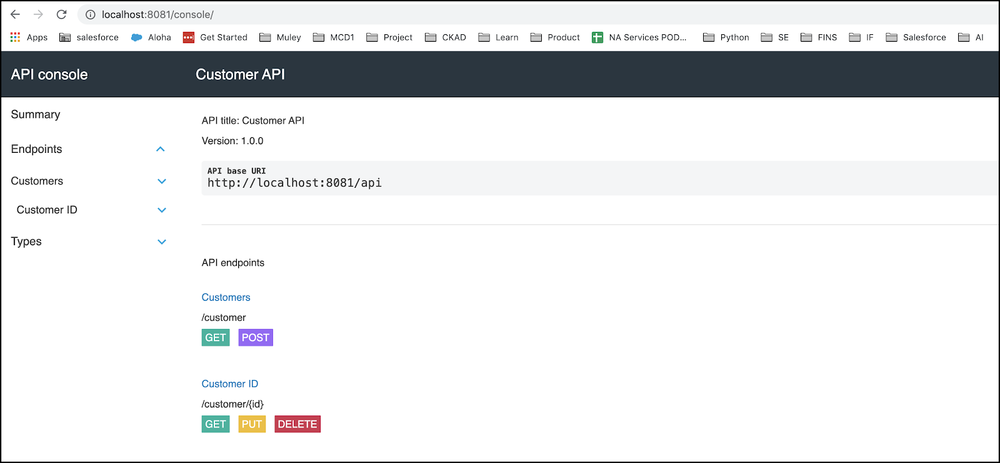 - Haga clic en la pestaña POST y pruebe la creación del cliente.
- En el campo Aceptar, complete con
application/json - Presione el botón Send.
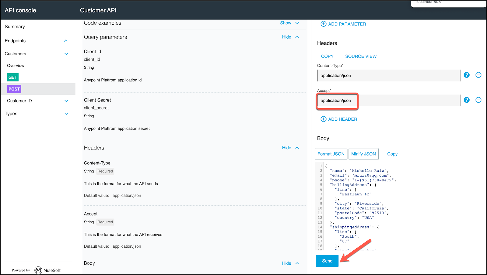 - Desplácese hacia abajo en el tercer panel y verá la respuesta de muestra definida en la especificación de la API.
- Vaya a la pestaña de la consola y presione el botón rojo para detener el servidor de tiempo de ejecución de Mule.
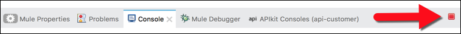
Los pasos que deben ejecutarse son:
- Con la api, haga clic en Add moduel
 inicie sesión en la Mule Palette para agregar el módulo de Validación y Conector de Salesforce requerido para nuestra implementación en el siguiente paso.
inicie sesión en la Mule Palette para agregar el módulo de Validación y Conector de Salesforce requerido para nuestra implementación en el siguiente paso. - Arrastrar y soltar el conector de Salesforce.
- Al final, la paleta debe verse similar a la siguiente imagen.
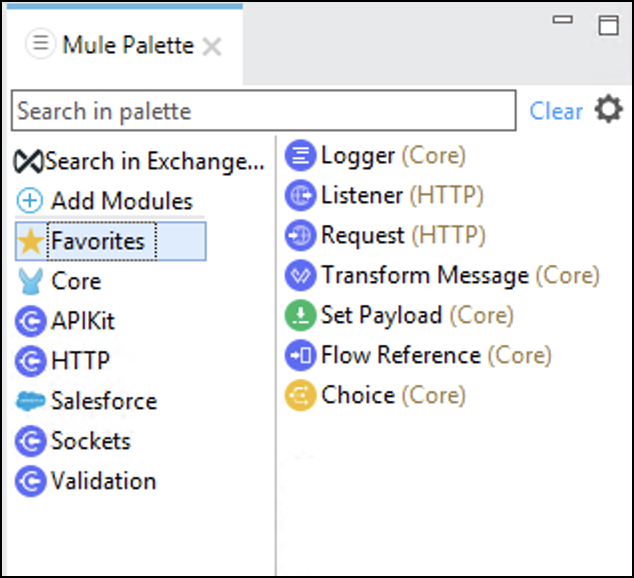 - Ahora, está listo para implementar la operación GET de recursos. Encuentra el flujo get:\cliente:aplicación\JSON:api-config (en la parte inferior de la API)
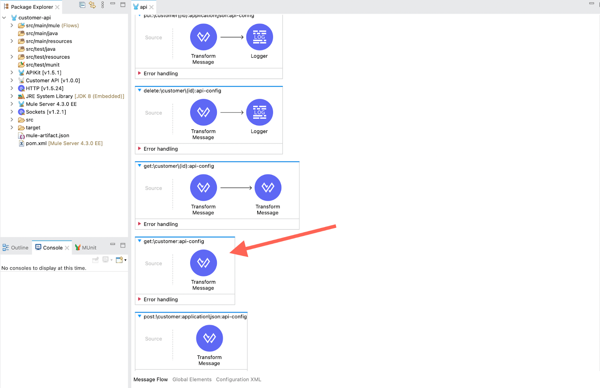 - De la Mule Palette, seleccione Salesforce Query y arrastre y suelte el componente sobre el flujo, antes del Componente de Transform Message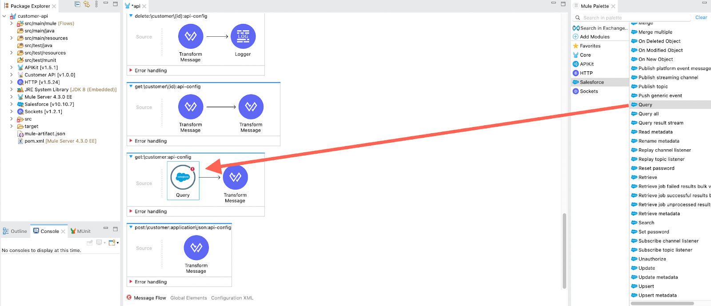
- Haga clic en el icono Salesforce la configuración se mostrará a continuación.
- Cambiar su nombre a
Consultar cuenta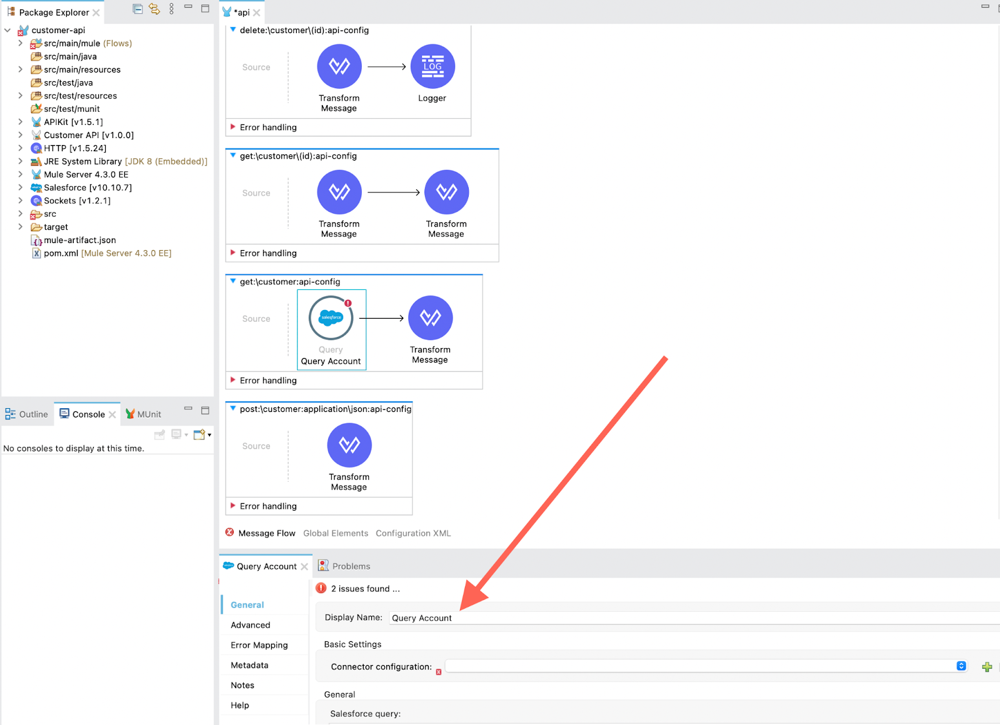 - Haga clic en el Guardar todo Botón.
- Ahora que tiene sus propiedades definidas, configuremos una nueva configuración de conector. Vuelva a la Message Flow donde soltó anteriormente el conector de Salesforce y selecciónelo.
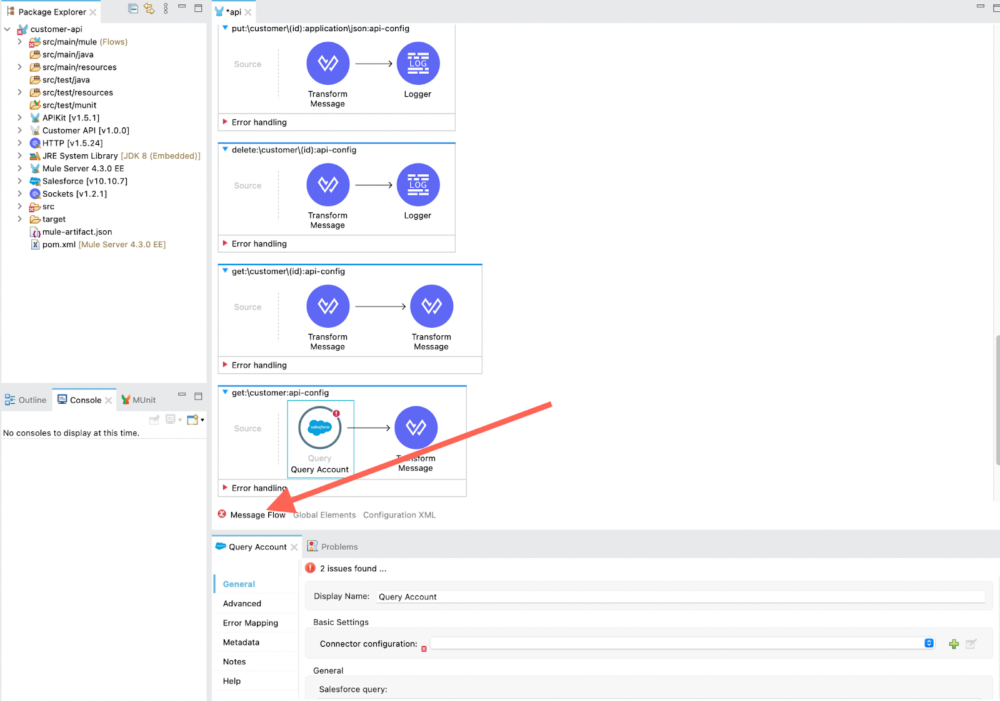 - Haga clic en el botón en la Configuración del conector.
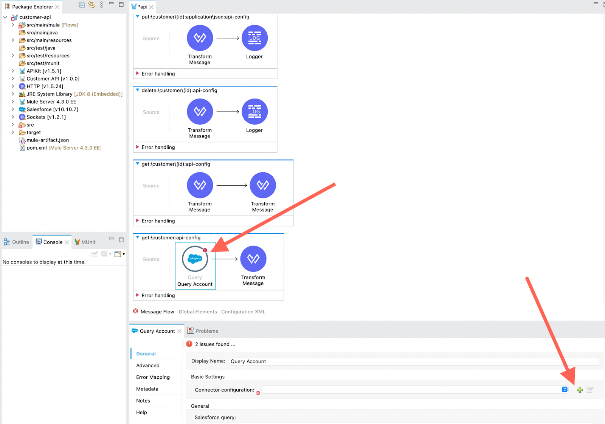 - Para la configuración del conector vamos a poner las siguientes propiedades:
- Username: demos+mythical_lab@mulesoft.com
- Password:
***** - SecurityToken:
***************
- Pulse Test Connection... para comprobar que todo está en su lugar.
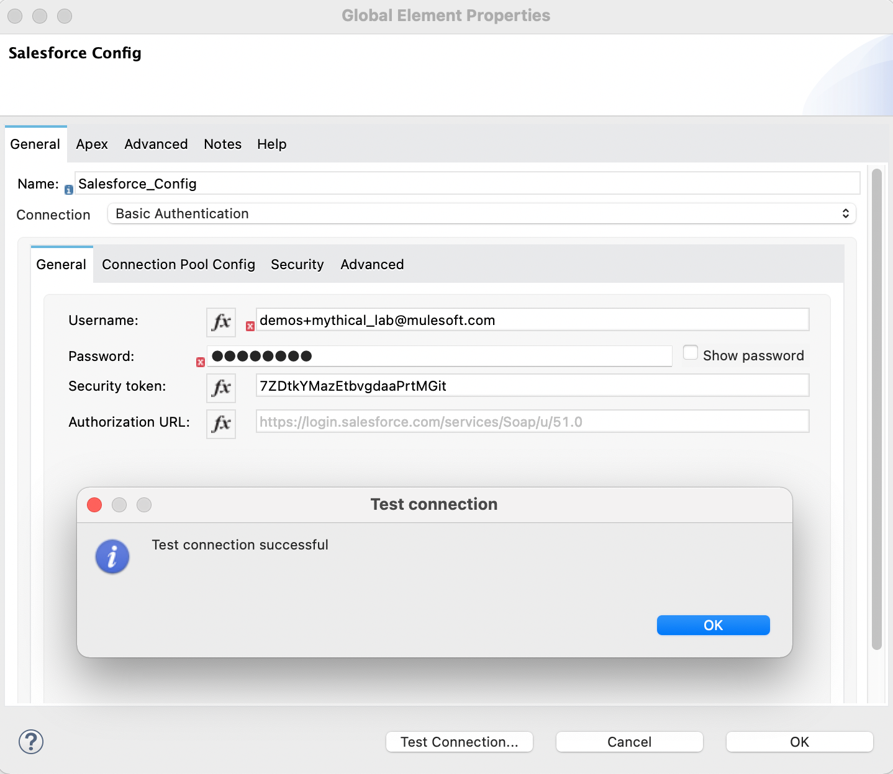 - Presione OK (2 veces).
- Haga clic en el Botón Guardar todo.
Configuremos el conector de Salesforce para consultar una cuenta. Continuamos en el Panel de Salesforce.
- Dentro del panel de conectores de Salesforce, copie y pegue la consulta en Salesforce Query
Este es el código de mapeo que refleja la imagen. Puede copiarlo y pegarlo en
SELECT Name, BillingStreet, BillingCity, BillingState, BillingPostalCode, BillingCountry, BillingLatitude, BillingLongitude, BillingGeocodeAccuracy, Phone, AccountNumber
FROM Account
WHERE BillingCountry = 'BR' - Haga clic en Transform Message y verá una transformación de Dataweave. en los paneles de entrada y salida. Puede arrastrar y soltar cada campo de la solicitud (objeto de Salesforce) a la salida.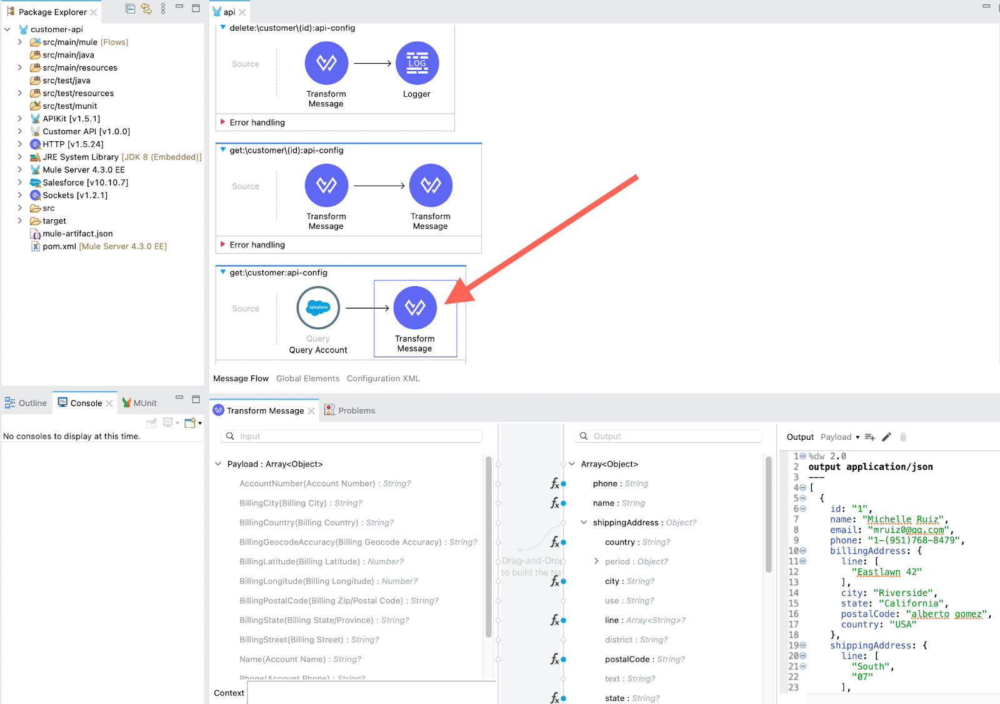
- Este es el código de mapeo que puede usar. Puede copiarlo y pegarlo en su editor de texto Dataweave y la interfaz de usuario reflejará los cambios
%dw 2.0
output application/java
---
[{
Name: payload.name,
BillingStreet: payload.billingAddress.address1,
BillingCity: payload.billingAddress. ciudad,
BillingState: payload.billingAddress.state,
BillingPostalCode: payload.billingAddress.postalCode,
BillingCountry
: payload.billingAddress.country,
ShippingStreet: payload.shippingAddress.address1,
ShippingCity: payload.shippingAddress.cityload.
ShippingPostalCode: payload.shippingAddress.postalCode,
ShippingCountry: payload.shippingAddress.country,
Phone: payload.phone, AccountNumber: uuid
(),
Account_Email__c: payload.email
}]- Haga clic en Botón Guardar todo.
- Una vez implementada la aplicación, Anypoint Studio abrirá una pestaña con las Consolas APIkit donde podemos probar la aplicación (para acceder a la consola, simplemente haga clic en el enlace para abrir Customer API Console en un navegador).
- Haga clic en la pestaña GET pruebe la consulta de clientes.
- Presione el botón Send.
- La solicitud devolverá 200 OK, seguido de una lista de las cuentas.
- ¡Felicitaciones, la aplicación se está ejecutando correctamente! En cuestión de minutos, se creó una integración con Salesforce utilizando una arquitectura API moderna.